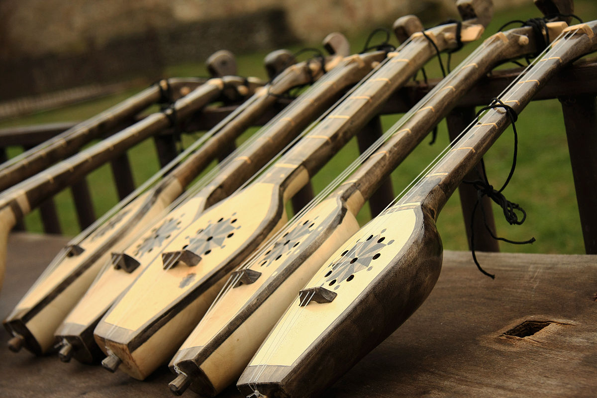

Panduri: Traditional Georgian Folk Instrument
Welcome to the Panduri Information Center.
Here you will find information and history about the traditional folk instrument
called panduri, as well as the country of Georgia from where it originates.
Here you may also find traditional Georgian folklore and stories of old, many of which
showcase this instrument. There will also be practical learning tips and resources for
those considering to purchase this instrument.
What is a Panduri?

The panduri is a traditional folk instrument which originates in the European country Georgia.
It is dominantly found in the eastern regions, namely Pshav-Khevsureti, Tusheti, Kakheti, and Kartli.
Though it is most commonly found there, it can also be found in the west as well, such as in the Imereti region,
or highland area Racha.
The traditional panduri is considered a three-string lute or plucked instrument with three to seven frets on the fretboard.
Newer variations, called chromatic panduri or panduri prima and tenor, are made with 12 frets and smaller tonal divisions.
These have the capacity to portray different scale systems than the older instrument variations, similar to those of modern guitars.
This instrument is not typically played with a pick but rather by hand with various theatrical strumming techniques.
There is a wide variety of styles of panduri. Every instrument can be seen differing in shape, size, build, and carved design.
Shapes tend to depend on the region, ranging from oar shaped, boat shaped, pear shaped, and oval shaped. For example,
panduri from the Khevsureti region of Georgia are very large and oar shaped. Some panduri can be very small and and boxlike,
while others can be large and rounded all the way around the back. They can be seen all over with varying carved and painted patterns.
Sometimes the block of wood that was used to make the instrument can have natural cuts and divets that add stylistically to the
aesthetic of the instrument.
[!FIXME: build + methods]